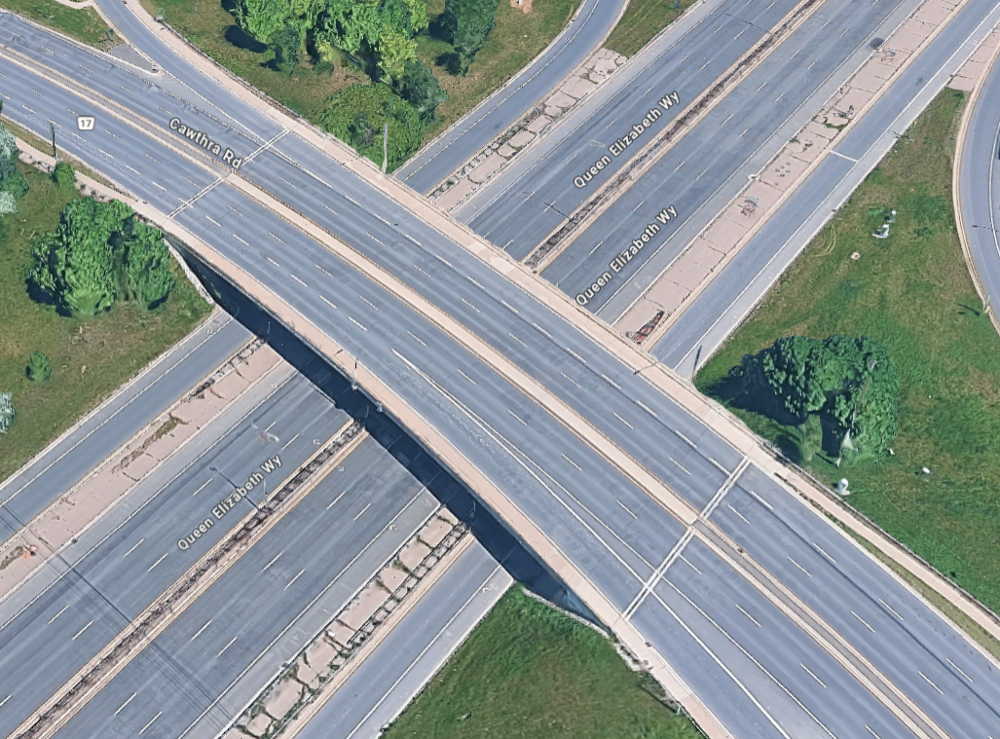

Engineering insights
Field-informed structural engineering lessons.
Technical commentary connecting observation, analysis, design decisions, construction quality and asset management.

Construction quality
Honeycombing Investigation and Remedial Planning
Assessment of visible concrete deficiencies in a heavily reinforced transfer slab.
Read insight →
Bridge engineering
Cawthra Road Diagnostic Load Test
Using measured structural response to support evaluation and asset-management decisions.
Read case study →
Existing structures
Investigating Existing Buildings Before Rehabilitation
As-built verification, testing, structural modelling and retrofit planning.
Read insight →